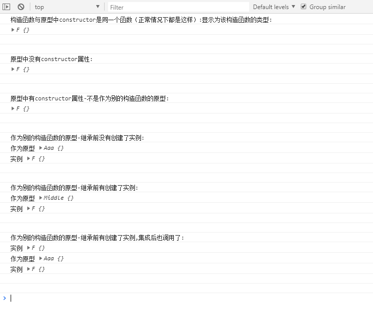
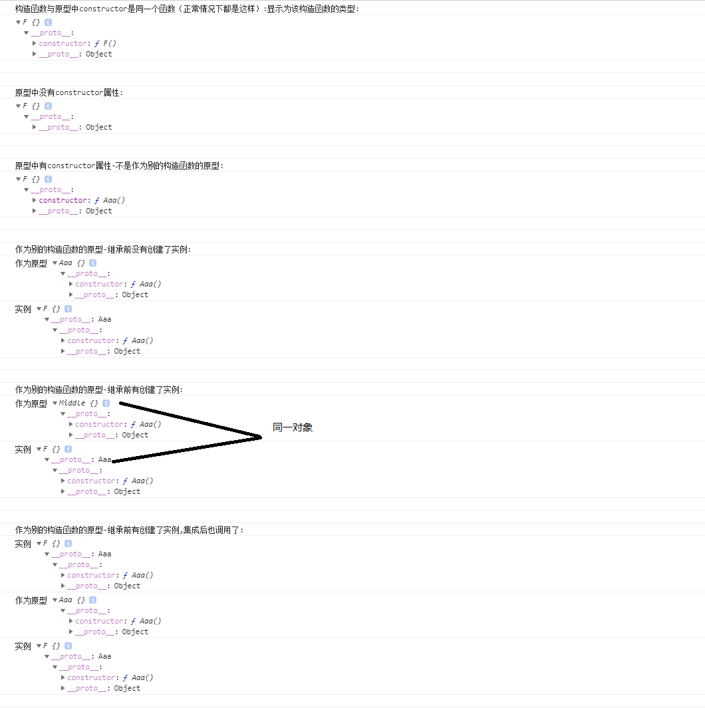

一、 构造函数与原型中constructor是同一个函数（正常情况下都是这样）:显示为该构造函数的类型
二、 构造函数与原型中constructor是不同一个函数（一般是改写或者继承）
1、 原型中没有constructor属性：显示为创造这个对象构造函数的类型
2、 原型中有constructor属性
a. 不是作为别的构造函数的原型：显示为创造这个对象的构造函数的类型
b. 作为别的构造函数的原型（就是涉及继承了）
① 这个原型所在的构造函数在继承前创建了实例：显示为创造这个原型的构造函数的类型
② 这个原型所在的构造函数在继承前没有创建了实例：显示为这个原型的原型的constructor的值
③ 这个原型所在的构造函数在继承前创建了实例，但是继承后又创建了实例（一般继承后都会创建新实例，不然继承做什么）：显示为这个原型的原型的constructor的值
c. 作为别的构造函数的原型，但在chrome中作为实例的内部属性__proto__显示时：显示为这个原型的原型的constructor的值

